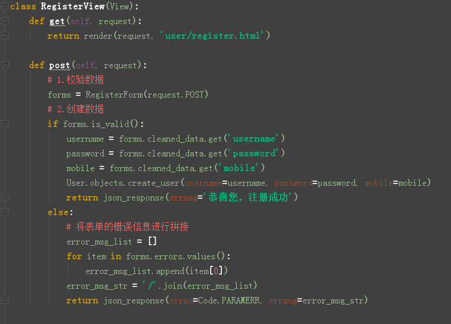
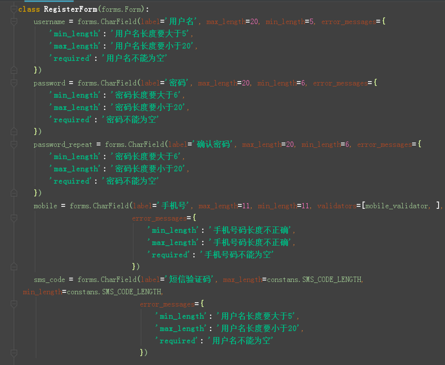
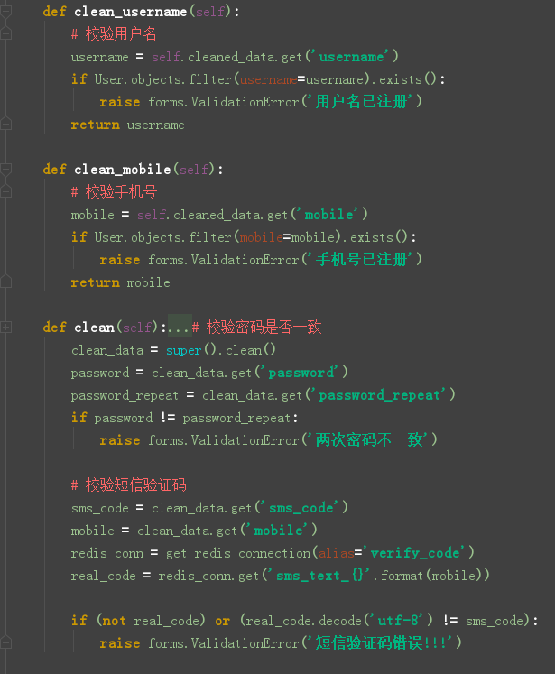
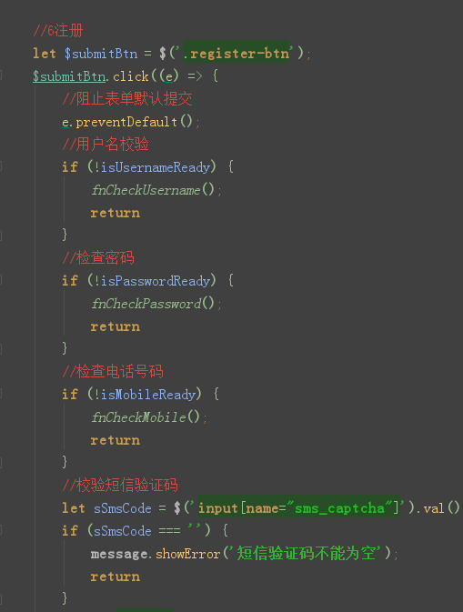
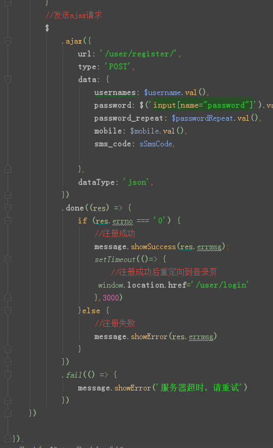

接着上一个教程，这一次讲述注册功能的最后一个功能，点击注册。按照之前的流程，一般从接口设计，参数说明，返回数据，后端代码，前端代码编写这个步骤进行：
| 类目 | 说明 |
| 请求方式 | post |
| url设置 | /user/register/ |
| 参数格式 | 表单 |
| 参数名 | 类型 | 是否必须 | 描述 |
| username | 字符串 | 是 | 用书输入的用户名 |
| password | 字符串 | 是 | 用户输入的密码 |
| password_repeat | 字符串 | 是 | 用户输入的确认密码 |
| mobile | 字符串 | 是 | 用户输入的手机号 |
| sms_code | 字符串 | 是 | 用户输入的短信验证码 |
{
"errno": "0",
"errmsg": "恭喜您，注册成功!",
}

数据的校验



’
以上是用户注册的前后端功能实现，注意我么能使用的ajax请求，所以我们要在前端代码中实现表单的默认提交方式。对于数据校验的后端代码，一定好好看，看懂逻辑。以上就是点击注册的前后端功能实现。谢谢大家！！！